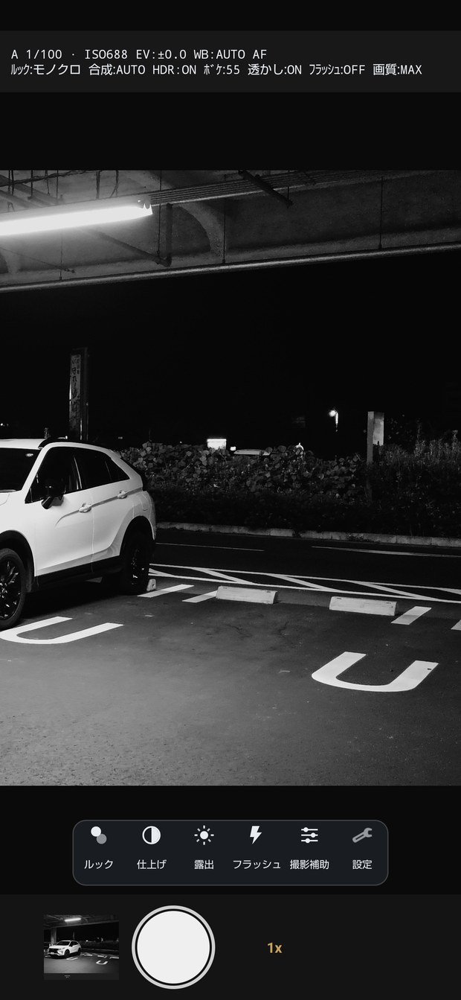

表示モードを変える

撮影画面の上のボタンか、設定 > 表示 > 表示モード（縦持ち） で切り替えます。初めて起動したときのガイドでも選べます。
- かんたん。ルック / フラッシュ / 撮影補助 / 設定 の4つ。プレビューをいちばん広く使えます。初めての人はここから。
- 標準（初期値）。上に加えて 仕上げ / 露出。
- プロ。さらに フォーカス。A/P/S/M、シャッター速度・ISO・ホワイトバランスの現在値が画面に出ます。
変わるのは画面に出す情報の量だけです。
撮影の設定（合成やHDR、画質、ルック）は切り替えても変わらず、写り方も3つとも同じです。
「かんたん」でも、撮影補助から動画まで全部たどり着けます。